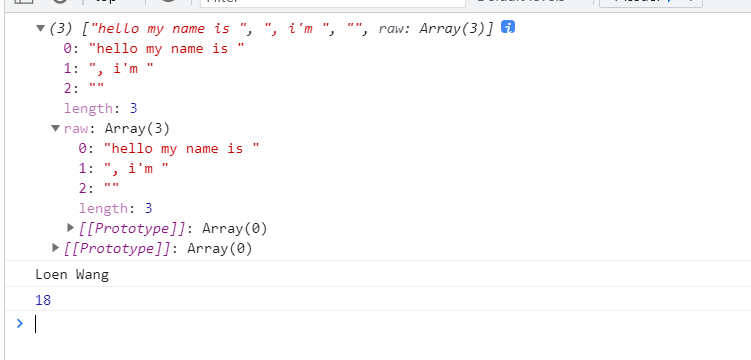

简介 什么是TypeScript(TS)？ TypeScript简称TS TS和JS之间的关系其实就是Less/Sass和CSS之间的关系 就像Less/Sass是对CSS进行扩展一样, TS也是对JS进行扩展 就像Less/Sass最终会转换成CSS一样, 我们编写好的TS代码最终也会换成JS
为什么需要TypeScript? 因为JavaScript是弱类型, 很多错误只有在运行时才会被发现 而TypeScript是强类型, 它提供了一套静态检测机制,如何我们编码事中途变换变量的类型，ts就会在报错，帮助我们在编码时发现错误。
Ts为帮助js弥补在大型项目中的缺陷而生。
TypeScript特点
支持最新的JavaScript新特特性
支持代码静态检查
支持诸如C,C++,Java,Go等后端语言中的特性
类型声明 Boolean、Number 1 2 3 4 5 6 7 8 9 10 let val2:boolean ;val2 = true ; console .log(val2);let val1:number ; val1 = 123 ; console .log(val1);
String 多行字符串 1 2 3 let hello: string = `Welcome to W3cschool` ;
内嵌表达式 1 2 3 4 5 6 let name: string = `Loen` ;let age: number = 37 ;let sentence: string = `Hello, my name is ${ name } . I'll be ${ age + 1 } years old next month.` ;
自动拆分字符串 1 2 3 4 5 6 7 8 9 10 11 12 13 function userinfo (params,name,age ) console .log(params); console .log(name); console .log(age); } let myname = "Loen Wang" ;let getAge = function ( return 18 ; } userinfo`hello my name is ${myname} , i'm ${getAge()} `

数组和元祖 数组数据类型一致
Array < number >
1 2 3 4 5 let arr1: Array <number >; arr1 = [1 , 3 , 5 ]; console .log(arr1);
string[ ]
1 2 3 4 5 let arr2:string []; arr2 = ['a' , 'b' , 'c' ]; console .log(arr2);
数组数据类型不一致 联合类型声明数组 (number | string)[ ]
1 2 3 4 5 let arr3:(number | string )[];arr3 = [1 , 'b' , 2 , 'c' ]; console .log(arr3);
自由任意类型元素的数组
如果不希望类型检查器对值进行检查,直接通过编译阶段的检查。 那么我们可以使用 any 类型来标记这些变量
1 2 3 let notSure: any = 4 ;notSure = "这是一个字符串" ; notSure = false ;
当你只知道一部分数据的类型时，any类型也是有用的。 比如，你有一个数组，它包含了不同的类型的数据：
1 2 3 let arr4:any []; arr4 = [1 , 'b' , false ]; console .log(arr4);
严格限制类型和长度的元祖数组 TS中的元祖类型其实就是数组类型的扩展,元祖用于保存定长定数据类型的数据
1 2 3 4 5 6 7 8 let arr5:[string , number , boolean ]; arr5 = ['a' , 1 , true ]; arr5 = ['a' , 1 , true ]; console .log(arr5);
enum枚举 枚举用于表示固定的几个取值,例如: 一年只有四季、人的性别只能是男或者女。 枚举类型是TS为JS扩展的一种类型, 在原生的JS中是没有枚举类型的。
1 2 3 4 5 6 7 8 9 10 11 12 13 14 15 16 17 18 enum Color {Red, Green, Blue}let c: Color = Color.Green;enum Color {Red = 1 , Green, Blue}let c: Color = Color.Green;enum Color {Red = 1 , Green = 2 , Blue = 4 }let c: Color = Color.Green;enum Color {Red = 1 , Green, Blue}let colorName: string = Color[2 ];alert(colorName);
Any、Void any表示任意类型, 当我们不清楚某个值的具体类型的时候我们就可以使用any，任何数据类型的值都可以赋值给any类型, 一般用于定义一些通用性比较强的变量, 或者用于保存从其它框架中获取的不确定类型的值
1 2 3 4 5 let value:any ; value = 123 ; value = "abc" ; value = true ; value = [1 , 3 , 5 ];
void与any正好相反, 表示没有任何类型, 一般用于函数返回值。在TS中只有null和undefined可以赋值给void类型
1 2 3 4 5 6 7 8 9 10 11 12 function test (void console .log("hello world" ); } test(); let value:void ; value = undefined ;
Never
表示的是那些永不存在的值的类型,一般用于抛出异常或根本不可能有返回值的函数。
Never 可以赋值给任意类型, 但其他类型不可以赋值给 Never
1 2 3 4 5 6 7 8 9 10 11 12 13 14 15 function error (message: string ): never throw new Error (message); } function fail ( return error("Something failed" ); } function infiniteLoop (never while (true ) { } }
Object 对象 1 2 3 4 5 6 let obj:object ; obj = {name :'lnj' , age :33 }; console .log(obj);
interface 接口 基本用法 1 2 3 4 5 6 7 8 9 10 11 12 13 14 interface Person { firstName : string ; lastName: string ; } function hello (person: Person ) return "Hello, " + person.firstName + " " + person.lastName; } let user = { firstName : "Wang" , lastName : "Loen" }; document .body.innerHTML = hello(user);
属性数量不确定时的定义方法 少用可选属性
1 2 3 4 5 6 7 8 9 10 11 12 13 14 15 16 17 interface FullName{ firstName :string lastName :string middleName?:string } function say ({firstName, lastName, middleName}:FullName ):void if (middleName){ console .log(`我的姓名是:${firstName} _${middleName} _${lastName} ` ); }else { console .log(`我的姓名是:${firstName} _${lastName} ` ); } } say({firstName :'Jonathan' , lastName :'Lee' , middleName :"666" }); say({firstName :'Jonathan' , lastName :'Lee' });
多用索引签名 在定义对象中key（propName）和value的数据结构，后续对象中的属性，只要key和value满足索引签名的限定即可, 无论有多少个都无所谓。
1 2 3 4 5 6 7 8 9 10 11 12 13 14 15 16 17 18 19 20 21 22 23 24 25 26 27 28 interface FullName { [propName:string ]:string } let obj:FullName = { firstName :'Jonathan' , lastName :'Lee' , } interface stringArray { [propName:number ]:string } let arr:stringArray = { 0 :'a' , 1 :'b' , 2 :'c' }; console .log(arr[0 ]);console .log(arr[1 ]);console .log(arr[2 ]);
接口的继承 1 2 3 4 5 6 7 8 9 10 11 12 13 14 15 16 17 18 19 20 21 22 23 24 25 26 interface LengthInterface { length :number } interface WidthInterface { width :number } interface HeightInterface { height :number } interface RectInterface extends LengthInterface,WidthInterface,HeightInterface { color :string } let rect:RectInterface = { length :10 , width :20 , height :30 , color :'red' }
函数接口 1 2 3 4 5 6 7 8 9 10 11 12 interface SumInterface { (a:number , b :number ):number } let sum:SumInterface= function (x,y ) return x + y; } let res = sum(10 , 20 );console .log(res);
只读属性 可以在属性名前用 readonly来指定只读属性:
1 2 3 4 interface Point { readonly x: number ; readonly y: number ; }
可以通过赋值一个对象字面量来构造一个Point。 赋值后， x 和 y 再也不能被改变了。
1 2 let p1: Point = { x : 10 , y : 20 };p1.x = 5 ;
TypeScript 具有 ReadonlyArray 类型，它与 Array 相似，只是把所有可变方法去掉了，因此可以确保数组创建后再也不能被修改：
1 2 3 4 5 6 let a: number [] = [1 , 2 , 3 , 4 ];let ro: ReadonlyArray<number > = a;ro[0 ] = 12 ; ro.push(5 ); ro.length = 100 ; a = ro;
函数声明 定义函数 1 2 3 4 5 6 7 8 9 10 11 12 13 14 15 16 17 18 function say1 (name:string ):void console .log(name); } let say2 = function (name:string ):void console .log(name); } let say3 = (name:string ):void => console .log(name); }
函数声明和分离实现 利用 type 声明函数 1 2 3 4 5 6 7 8 9 10 type AddFun = (a:number , b:number )=> number ; let add:AddFun = function (x, y ) return x + y; }; let res = add(30 , 20 );console .log(res);
利用 interface 声明函数 1 2 3 4 5 6 7 8 9 10 interface AddFun { (a:number , b :number ):number } let add:AddFun = function (x, y ) return x + y; }; let res = add(30 , 20 );console .log(res);
参数 可选参数 1 2 3 4 5 6 7 8 9 10 function add (x:number , y:number , z?:number ):number return x + y + (z ? z : 0 ); } let res = add(10 , 20 );let res = add(10 , 20 , 30 );
默认参数 1 2 3 4 5 6 function add (x:number , y:number =10 ):number return x + y; } let res = add(10 );let res = add(10 , 30 );
剩余参数 1 2 3 4 5 6 7 function add (x:number , ...ags:number [] ) console .log(x); console .log(ags); } add(10 , 20 , 30 , 40 , 50 )